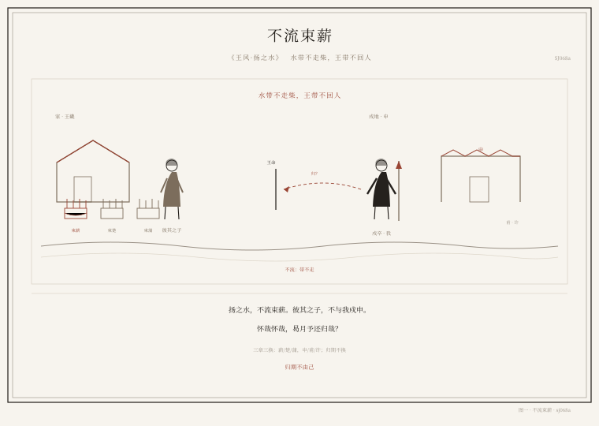
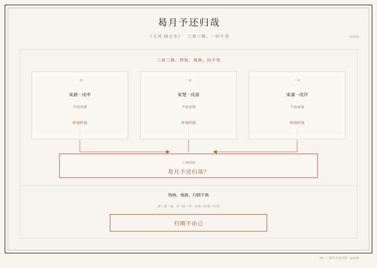

第六十八篇 扬之水
王风 · 之四 SJ068
朗读 · 普通话
依经文正文朗读，句读从文；不配乐、不改速、不加拖腔。全库同一音色（豆包 TTS），非播音员录制。
一 解题
诗三判：
- 谁在说：一个被派去戍守申国的周人。诗里的「我」在申地，家里那个人在乡里；他不是不想回，是归期不由己。
- 说什么事：扬之水漂不走一捆柴；「彼其之子」不能和我一起戍申；「怀哉怀哉」，何月才能还归。三章只换柴木与戍地，末句一问不变。
- 为何编在此：王风第四首。前一篇《君子阳阳》写乱世里的乐，这一篇写乱世里的苦；乐是壳，怨是底。王风从国破、家散、自处，走到戍役不归。
《毛序》：「《扬之水》，刺平王也。不抚其民，而远屯戍于母家，周人怨思焉。」
毛传：「兴也。扬，激扬也。」「戍，守也。申，姜姓之国，平王之舅。」「楚，木也。甫，诸姜也。」「蒲，草也。」「许，诸姜也。」
郑笺：「激扬之水至湍迅，而不能流移束薪。兴者，喻平王政教烦急，而恩泽之令不行于下民。」「之子，是子也。彼其是子，独处乡里，不与我来守申，是思之言也。」「怀，安也。思乡里处者，故曰今亦安不哉，安不哉！何月我得归还见之哉！思之甚。」「蒲，蒲柳。」
朱子《诗集传》：「兴也。扬，悠扬也。水缓流之貌。彼其之子，戍人指其室家而言也。戍，屯兵以守也。申，姜姓之国。平王之母家也。在今邓州信阳军之境。怀，思。曷，何也。○平王以申国近楚、数被侵伐，故遣畿内之民戍之。而戍者怨思作此诗也。」
本库的看法：《扬之水》是一首「归期不由己」的诗。
水带不走柴，王带不回人；三章三换，一问不变。不是不想家，是想得说不出；不是不归，是归期不由己。
先辨三物：扬之水不是「扬子江」，是水花扬起的小水；不流不是「水不流动」，是漂不走、带不走；束薪不是「束身」，是捆柴；彼其之子不是「他的儿子」，「其」音记，是语助，「之子」指家里那个人；戍申不是「守上海」，是守申国；甫不是「甫田」，是吕国；许不是「许愿」，是许国。
二 经文
第一章
扬之水，不流束薪。彼其之子，不与我戍申。怀哉怀哉，曷月予还归哉？
第二章
扬之水，不流束楚。彼其之子，不与我戍甫。怀哉怀哉，曷月予还归哉？
第三章
扬之水，不流束蒲。彼其之子，不与我戍许。怀哉怀哉，曷月予还归哉？
分章：三章，章六句。
三 韵读
| 一 |
水/子；薪/申；怀/归 |
微/止平上通押；真；皆/微通押 |
| 二 |
水/子；楚/甫/许；怀/归 |
微/止；语/麌上声；皆/微 |
| 三 |
水/子；蒲/许；怀/归 |
微/止；模/语平上通押；皆/微 |
《诗本音》：水【五微，与子协】、薪【十七真】、申【十七真】、怀【十四皆】、归【八微】；楚【八语】、甫【九麌】、许【八语】；蒲【十一模】。三章「以平上通为一韵」。「哉」不入韵；「之」不入韵。
四 字义与名物
字义
- 扬——水花扬起；毛传「激扬」，朱子「悠扬、水缓流之貌」。
- 不流——漂不走、带不走；不是「水不流动」。
- 束薪——捆柴；不是「束身」，也不必强解为婚姻。
- 彼其之子——那个人、家里那个人；「其」音记，语助，不是「他的」。
- 戍——屯兵守卫。
- 申——申国，姜姓；平王母家。
- 甫——甫国，即吕国，姜姓。
- 许——许国，姜姓。
- 怀——想念；郑笺又训「安」，有「安否」之意。
- 曷——何。
- 还——音旋，归还。
- 予——我。
- 哉——语助。
- 母家——申国。
- 周人——王畿之民；不是泛称「周朝人」。
- 怨思——怨而思归。
- 不抚——不抚恤。
- 远屯戍——远派屯兵戍守。
- 平王——周平王。
名物
- 薪——柴。
- 楚——荆木；一捆荆柴。
- 蒲——蒲柳；郑笺、朱子取「蒲柳」，毛传训「草」。
- 申/甫/许——三处姜姓之国；申为平王母家，甫即吕，许在今许昌。
- 束——捆。
五 今译
第一章
扬起的河水，漂不走一捆柴。家里那个人，不能和我一起戍守申国。想念啊，想念啊，哪一个月我才能回去？
第二章
扬起的河水，漂不走一捆荆柴。家里那个人，不能和我一起戍守甫国。想念啊，想念啊，哪一个月我才能回去？
第三章
扬起的河水，漂不走一捆蒲柳。家里那个人，不能和我一起戍守许国。想念啊，想念啊，哪一个月我才能回去？
说明：「彼其之子」今译作「家里那个人」；「怀哉」作「想念啊」；「曷月」作「哪一个月」；「还归」作「回去」。「甫」即吕国，今译仍作「甫国」，注见字义。
六 章旨
一章：薪—申—怀—归。
水漂不走柴，人不能同戍；「怀哉怀哉」连呼，「曷月予还归哉」一问。
二章：楚—甫—怀—归。
柴换荆木，地换甫国；怀与问不变。
三章：蒲—许—怀—归。
柴换蒲柳，地换许国；怀与问仍不变。
三章合看：物换、地换，归期不换。
薪、楚、蒲是捆柴的三种写法；申、甫、许是三处姜姓戍地。毛序说「刺平王不抚其民，远屯戍于母家」；朱子说「戍者怨思作此诗」，又直评平王「忘亲逆理」「以非其职而怨思」。诗面是思家，诗教是刺王；不把思家读成忠君颂。
七 诗教
- 兴：朱子标「兴也」。水不流薪，兴戍者不归；柴在岸上，人在申地，归期在水外。
- 观：观戍役之苦——三章三换，归期一字不换；观平王之失——不抚其民，远戍母家；观「周人怨思」——怨而不直斥，只问「曷月」。
- 群：可与戍卒同群，与离家人同群。诗不写「忠」，只写「怀」；不写「怨」，只写「问」。
- 怨：怨在「曷月予还归哉」。问天，问月，问归期；问而不答，比直斥更沉。
八 分寸与边界
- 不可把「扬之水」当「扬子江」。扬是水花扬起，不是江名。
- 不可把「不流」当「水不流动」。不流是漂不走、带不走。
- 不可把「束薪」当「束身」。束薪是捆柴。
- 不可把「彼其之子」当「他的儿子」。「其」音记，是语助；「之子」指家里那个人。
- 不可把「戍申」当「守上海」。申是申国，平王母家。
- 不可把「甫」当「甫田」。甫是甫国，即吕国。
- 不可把「许」当「许愿」。许是许国。
- 不可把「怀」当「怀抱」。怀是想念，郑笺又训「安」，有「安否」之意。
- 不可把「曷」当无义字。曷是何。
- 不可把「还」当「还有」。还音旋，是归还。
- 不可把「母家」当「娘家」的泛称。此处母家是申国。
- 不可把「周人」当「周朝人」的泛称。周人是王畿之民。
- 不可把「平王」只当「平王东迁」四字。此诗刺的是他役使王畿之民、远戍母家。
九 存疑
- 诗旨：毛序「刺平王，不抚其民，远屯戍于母家，周人怨思」；朱子「戍者怨思作此诗」，并直评平王「忘亲逆理」「以非其职而怨思」。本库两存：诗面是怨思，诗教是刺王。
- 「扬」：毛传「激扬」，郑笺「湍迅」；朱子「悠扬，水缓流之貌」。一急一缓，都落在「不流」。
- 「不流」：毛传以「岂不能流」为兴，郑笺以「不能流」为喻；孔疏谓毛「言能流移之」，郑「唯上二句为异」。本库并存。
- 「彼其之子」：毛传「是子也」，郑笺「独处乡里」，朱子「戍人指其室家」。本库取「家里那个人」。
- 「怀」：郑笺「安也」，朱子「思」。本库取「想念」，并存「安否」。
- 「甫/许」：孔疏说「借甫、许以言申，其实不戍甫、许」；朱子说「当时盖以申故而并戍之」。本库并存。
- 「蒲」：毛传「草也」，郑笺、朱子「蒲柳」。本库取「蒲柳」，并存毛传。
- 「束薪」是否喻婚姻：毛传、郑笺、朱子均无此说；后世有以束薪喻妻者。本库不取，只作捆柴。
- 「申」与平王之亲：毛传称「平王之舅」，朱子称「平王之母家」。本库并存，不强行判定。
- 诗作年代：孔疏以《扬之水》与《君子于役》《葛藟》皆序云平王，定为平王诗。本库从之。
十 跨典
- 《王风·君子于役》：行役思家；此篇戍役思家。前篇问「曷至哉」，此篇问「曷月予还归哉」；一黄昏，一月。
- 《王风·君子阳阳》：前一篇写乱世里的乐，此篇写乱世里的苦；乐是壳，怨是底。
- 《小雅·小明》：「岂不怀归，畏此罪罟。」行役思归，与此篇「怀哉怀哉」同调。
- 《邶风·北门》：「王事适我，政事一埤益我。」役使之苦，与此篇远戍母家对读。
- 《左传》/《史记》：申侯与犬戎攻宗周，弑幽王，平王东迁。朱子因此直评平王「知有母而不知有父」；此篇的「怨思」不只是一家之思，也是王政之失。
十一 双卡与图
双卡十一对：
| 扬之水（水花扬起） |
扬之水（扬子江，误） |
| 不流束薪（漂不走一捆柴） |
不流（水不流动，误） |
| 束薪（捆柴） |
束薪（束身/婚姻，误） |
| 彼其之子（那个人/室家） |
彼其之子（他的儿子，误） |
| 戍申（守申国） |
戍申（守上海，误） |
| 甫（吕国） |
甫（甫田，误） |
| 许（许国） |
许（许愿，误） |
| 怀哉（想念/安否） |
怀哉（怀抱，误） |
| 曷月（何月） |
曷月（曷字无义，误） |
| 还归（归还） |
还归（还有归，误） |
| 母家（申国） |
母家（娘家泛称，误） |

图一 · 不流束薪 水带不走柴，王带不回人

图二 · 曷月予还归哉 三章三换，一问不变
读图三处：
- 水与柴：图一，水花扬起，却漂不走岸上的捆柴；不是水不急，是水带不走。
- 物与地：图一，薪、楚、蒲三捆柴，申、甫、许三处戍地；物换地换，人还在申。
- 问与归：图二，三章都收在「曷月予还归哉」；归期不在自己手里，问也没有答案。